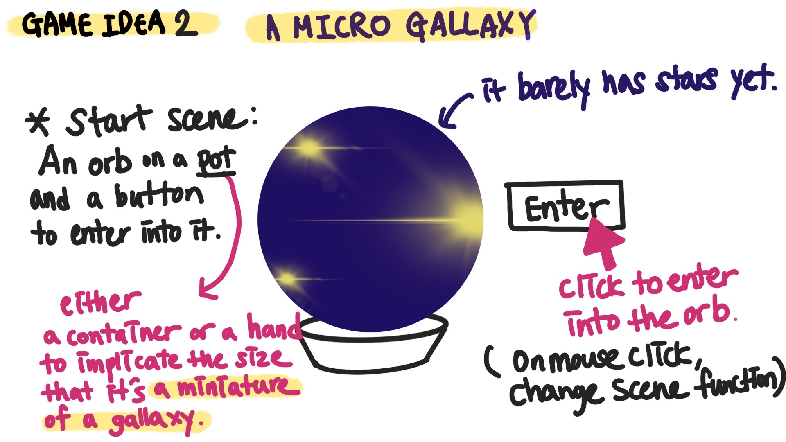
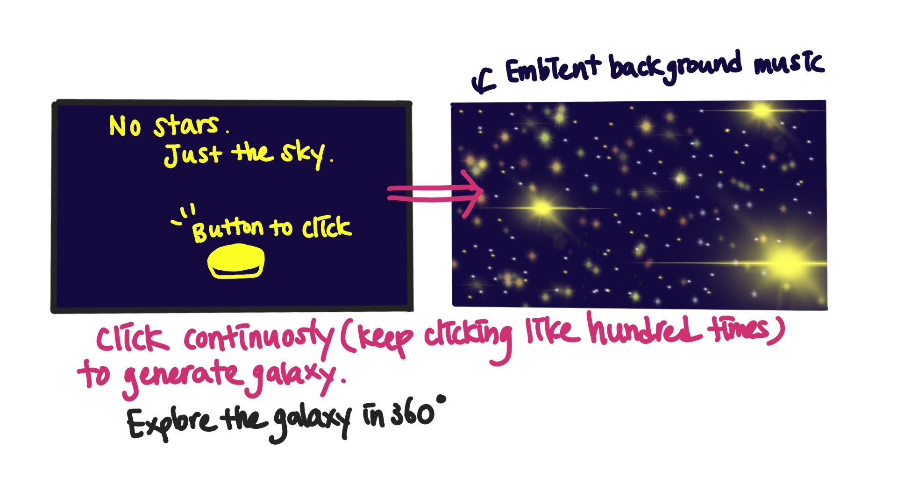

<!DOCTYPE html>

<html lang="en">
    
    <head>

        <meta charset="utf-8" name="viewport" content="width=device-width, initial-scale=1.0">
        <link rel="stylesheet" type="text/css" href="../style.css">
        <script type="module" src="../three.js" defer></script>

    

        <title>MINNIE PARK</title>

      <!-- Favicon -->
      <link rel="apple-touch-icon" sizes="180x180" href="../favicon/apple-touch-icon.png">
      <link rel="icon" type="image/png" sizes="32x32" href="../favicon/favicon-32x32.png">
      <link rel="icon" type="image/png" sizes="16x16" href="../favicon/favicon-16x16.png">
      <link rel="manifest" href="../favicon/site.webmanifest">


        <style>
            body {
                background-color: rgb(30, 12, 47);
                background-image: linear-gradient(to right, rgba(255, 255, 255, 0), rgb(31, 7, 34));
                background-image: cover;
                
            }
        </style>
        
    </head>

    <body>
        <header>
            <div id="header-section">
                <nav>
                    <ul>
                        <li><a href="../index.html"></a></li>
                    </ul>
                </nav>
                
                <audio id="bgm" src="../audio/galaxy.mp3" autoplay loop></audio>
                <script>
                    var bgm = document.getElementById("bgm");
                    bgm.volume = 0.5;
                    var musicPlay = document.getElementById("musicPlay");
                    musicPlay.onclick = function(){
                        if(bgm.paused){
                            bgm.play();
                            musicPlay.src="../img/musicnote.png";
                        } else {
                            bgm.pause();
                            musicPlay.src="../img/pause.png";
                        }
                    }
                </script>
            </div>
        </header>
<!-- 
    <h1 id="top"></h1>
        <br><br><br>
    <div class ="text-wrapper">
        <h2>WANNA PLAY THE GAME PREVIEW BELOW?</h2>
        <h2>WANNA PLAY THE GAME PREVIEW BELOW?</h2>
        <h2>WANNA PLAY THE GAME PREVIEW BELOW?</h2>
        <h2>WANNA PLAY THE GAME PREVIEW BELOW?</h2>
    </div> <br><br>

        <div id="embed">
        <iframe width="720" height="405" src="https://www.youtube.com/embed/RYa1KWe_uG8" 
        title="YouTube video player" frameborder="0" 
        allow="accelerometer; autoplay; clipboard-write; encrypted-media; gyroscope; picture-in-picture" 
        allowfullscreen></iframe>
        </div>

        <ul><li><a href="https://minniepark.itch.io/galaxy-in-your-hand?secret=x9OKYiSkOEieKn6gFi5Grk42X4" target="_blank"><h4>DOWNLOAD LINK</h4></a></li></ul>

        <br><br><br><br><br><br><br>

<div class="contentBox" >
    <h3>WHAT IS IT?</h3>
    <br><br><br>
    <p >
    It's a minimalist clicker game when the player generates the galaxy as a result of certain amount of clicks. 
    </p><br>
    <p2> The Narrative of the game</p2>
    <p>
    is about a miniature galaxy that is generated with building required amount of energy. The generated galaxy is kept in an orb and every one has their own galaxy which they can go inside the orb and explore the galaxy if they want to.
    </p><br>
            
    <p2>GALAXY IN YOUR HAND</p2>
    <p>
    is therefore, a game which a player clicks 100 times to enable the button to generate the galaxy and explores the galaxy with flying control.
    </p><br><br>
</div>

<div class="contentBox" >
    <h3>DESIGN APPROACH</h3>
    <br>
    <br><br><br>
  <p2>Concept Design: Digital Bonsai</p2>
    <p>
    Inspired by the clicker challenge game, Galaxy in your hand was designed with adapting aspects of digital Bonsai, which explores the miniaturisation of nature as well as the dedication and patience it requires to create a bonsai. Once you create a bonsai, in this game, a miniature galaxy, you can now observe what you created with endless clicks and relax!
    </p><br>
    <p>
    Minimalist game elements are applied in the game as well, such as the only one interaction with minimal instructions and controls.
    </p><br>

    <p2>Technical Design: Clicker Challenge</p2>
    <p>
    A main button to build the energy is created adapting the scripts of the clicker challenge. Once the player clicks the button 100 times,  it enables the button to generate the galaxy.    
    <br>
    The game also is designed with the particle systems,  flying controls and rotating skybox scripts.
    </p><br>

    <p2>Why is the galaxy in your hand?</p2>
    <p>
        To express the concept of miniaturisation by showing the galaxy is in your hand.  But even without showing the hand, players are looking at the galaxy through the screen of the laptop, which becomes a miniature galaxy that is located on the screen. It's like a digital bonsai of the galaxy.
        <br>
    </p><br>
    <br><br><br>
    <p2>Aesthetics, Colour Palette and Sound Design</p2>
   
    <p>
        The main colour of the game is light purple. The purple colour gives a more dreamy and mysterious feeling to the entire experience during the game. 
        There are two different background music applied in the game. First one is applied in the main menu and the game scene, it's calm and inspiring ambient music. And the other one is added to the last scene of the galaxy. The music is even more calm and quiet that it really helps enhance the calm and peaceful experience of exploring the galaxy and the stars in the universe. 
    </p><br><br>
</div>

<div class="contentBox" >
    <h3>REFLECTION</h3>
<p>
    I will come back to this game when I feel like I need calm and peaceful energy. I really enjoyed watching the galaxy and the stars emitting lights and rotate when I went very close to them. I wonder how much this experience would be even more powerful if I played this game in the black box room or with other huge screen. I thought it might also be amazing to use a projector in a room so that all the walls of the room are actually projected with these stars. It would be really an immersive experience.
    <br><br>
    I do want to fix a few things from the game on top of many other things to improve, I realised the flying control became the most challenging part of the game. I’ve tried adjusting the input system to enhance the experience of the game. I really learned that no matter how great the game environment is built, if the control is not working properly, it really affects the entire experience of the game. I learned this in a hard way through this game and I’m grateful to learn this now so I can be definitely more alert with this from now on.
</p><br><br>
</div><br>

<div class="bottomPage">
    <ul><li><a href="#top"></a></li></ul>
    <ul><li><a href="../index.html"></a></li></ul>
    <ul><li><a href="contact.html"></a></li></ul>
</div><br>
 -->

</body>

</html>

